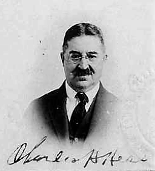
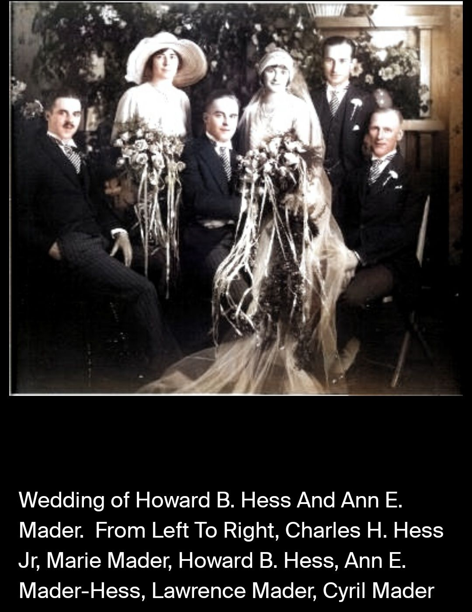
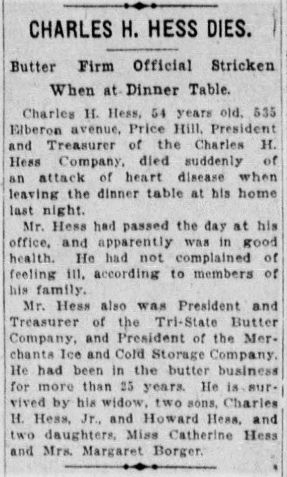
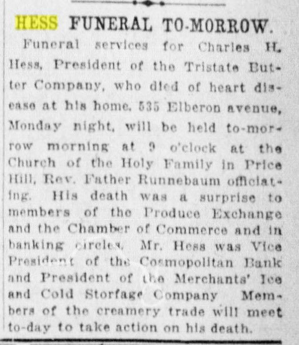
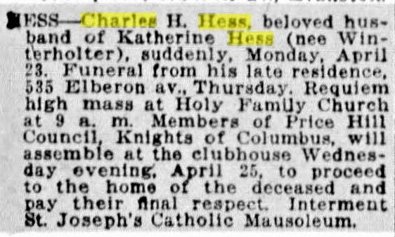

Hess line · Cincinnati business executive · husband of Katherine A. Hess

Quick Facts
Born
22 December 1869 · Aurora, Dearborn County, Indiana (Find a Grave memorial)
Died
23 April 1923 · Cincinnati, Hamilton County, Ohio (Find a Grave memorial)
Last residence
535 Elberon Avenue, Price Hill, Cincinnati (1923 newspaper notice transcription)
Buried
Saint Joseph New Cemetery / Catholic Mausoleum, Cincinnati (memorial and notice)
Occupation
Butter-business executive; notices name Charles H. Hess Co., Tri-State Butter Co., Merchants Ice and Cold Storage Co.; also Cosmopolitan Bank (newspaper clipping transcription)
Religion
Catholic funeral at Holy Family Church is reported in 1923 notice; no separate membership record reviewed.
Immediate Family
Parents
Unknown father; not identified in the material reviewed.
Margaret Ott Hess (1839–1926; contributor-linked parent; no original parent record inspected)
Spouses
Katherine A. Hess (1877–1967; memorial says Winterhalter, notices give Winterholter/Wiedmer)
Charles’s 1923 newspaper notice names sons Charles H. Jr. and Howard, daughters Catherine and Mrs Margaret Borger, and wife Katherine (née Winterholter). Later contributor memorials identify the children as Marguerite A. Hess Dorger, Howard Bernard Hess, Charles H. Hess Jr., and Catherine Hess Ryan. The 1953 Howard notice and 1967 Katherine notice corroborate several links. Keep “Borger” vs “Dorger” and Katherine’s maiden name as source conflicts, not silently merged facts.
1869 Birth reported 22 December in Aurora, Dearborn County, Indiana; Find a Grave memorial data.
1898–1908 Four children are linked across family memorials; the 1923 obituary lists two sons and two daughters.
1923 Died 23 April in Cincinnati, Hamilton County, Ohio; obituary reports sudden heart disease at home.
1923 Burial reported at Saint Joseph New Cemetery / Catholic Mausoleum, Cincinnati.
Life Story
Charles H. Hess’s family history and business life are best captured in the newspaper notice reproduced in his memorial gallery. It reports that he led Charles H. Hess Company, Tri-State Butter Company, and Merchants Ice and Cold Storage Company; another notice calls him a butter-business veteran and gives the family address as 535 Elberon Avenue, Price Hill. These are transcribed newspaper clippings attached to a memorial rather than directly inspected newspaper originals.
His wife is identified in the 1923 notices as Katherine (née Winterholter). A later obituary identifies her as Katherine A. (née Wiedmer), while contributor memorials use Winterhalter; the identity appears likely but the maiden-name discrepancy remains unresolved.
Photo Gallery
Signature reads Charles H. Hess; memorial gallery labels the image 1921. Used as the profile portrait.

Caption identifies Charles H Hess Jr. among the relatives; family context, not Charles Sr.

Notice reports his companies and family.

Names wife Katherine (née Winterholter) and children.

Additional Find a Grave gallery upload; archived separately.
No original birth, marriage, census, death certificate, probate or newspaper original inspected in this pass; the family memorials and image transcriptions are derivative.
Charles’s father is not identified in the reviewed sources; Margaret Ott is only a contributor-linked parent.
The image captioned “1921” on his memorial is preserved as an unidentified image lead, not asserted as a portrait of Charles.
Do not confuse Charles H. Hess Jr. (1902–1938), Howard’s sibling, with Howard and Anne’s son Charles H. Hess (1941–2002).